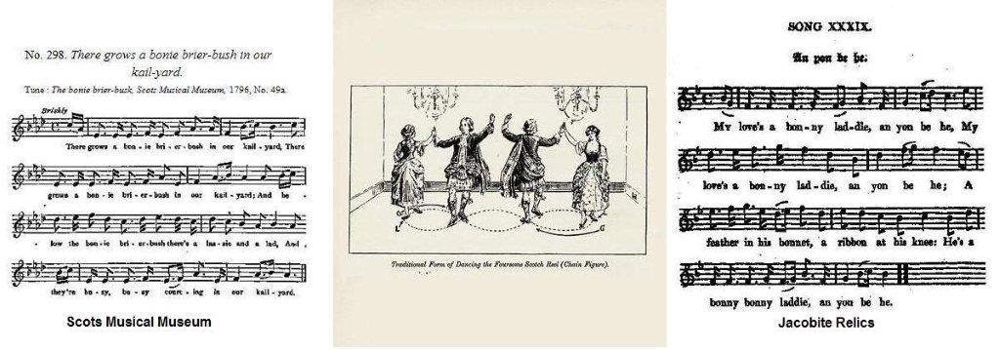

The Bonny Brier Bush
L'églantier joli
Robert Burns: Scots Musical Museum, 1796, N° 492
(A MS in Burns's handwriting is in the British Museum)Alternative titles:
An Yon Be He! - Carlisle Ha'
Et il est là-bas - La Halle de Carlisle
Hogg's Jacobite Relics 2nd Volume, 1821, N°39 page 77
Tune - Mélodie"The bonny Brier Bush" (from the "Scots Musical Museum")
Variant "Yon be he!"
from Hogg's "Jacobite Relics" 2nd Series N°39
Sequenced by Christian Souchon

|
To the tune:
This is supposed to be an old song with alterations, but nothing of it is known prior to Burns's manuscript. Stenhouse, as the earliest commentator, need only be referred to: " This song, with the exception of a few lines which are old, was written by Burns for the Museum." Burns likewise communicated the air to which the words are adapted. No song of the kind can be found in any of the many collections existing in 1796. From the verses of Burns a pungent critic branded the modern school of Scottish sentimental fiction as "Kailyard literature". Baroness Nairne wrote an imitation of "The bonnie brier-bush", and in the "Scottish Minstrel", 1821, i. 22, is a combination of Burns and Nairne, which is stated in the Index to be by Burns, The original publication of the tune is in the Museum with the verses, but it contains phrases of an older tune. Source "Complete Songs of Robert Burns Online Book". Hogg gives a version including an additional first verse and presenting here and there a slightly different wording. He writes: "This is one of the songs which, it appears, the strictness of the times had compelled the publishers to alter; and though only a few words occur in this which are not in the Museum, yet these serve to give it a Jacobite turn. It is from Mr Stewart's Collection. The air is very old, being the original of that from which 'The Lack o' Gowd' has been modernized." |
A propos de la mélodie:
Il s'agit sans doute d'un chant ancien modifié dont on ne sait rien avant son apparition sur le manuscrit de Burns. Stenhouse, qui fut le premier commentateur de cette pièce, écrit: "Ce chant, à l'exception de quelques lignes qui sont anciennes, a été écrit par Burns pour le Musée." De même, c'est Burns qui a communiqué l'air qui va avec les paroles. On ne peut trouver aucun chant de ce genre dans les nombreux recueils existant en 1796. Par référence aux vers de Burns, un critique acerbe avait stigmatisé un genre nouveau de fiction rurale écossaise à l'eau de rose, en l'appelant "kailyard literature" (littérature de jardins potagers). Lady Nairne a commis un pastiche de "l'Eglantier joli" et, dans le "Ménestrel écossais", 1821, tome 1, N°22, on trouve une combinaison de Burns et Nairne, l'index attribuant ce monstre à Burns. C'est le "Musée" qui est le premier à publier cette mélodie, où l'on distingue des éléments d'un chant plus ancien. Source "Complete Songs of Robert Burns Online Book". Hogg donne une version qui comporte une strophe supplémentaire au début et des différences mineures dans le texte. Il écrit: "Voici l'un de ces chants que la sévère censure de l'époque avait contraint ses éditeurs à reformuler; et, bien qu'on n'y trouve qu'un petit nombre de mots qui soient absents de la version du "Musée", ceux-ci ont pour effet de lui donner une tournure Jacobite. Il provient de la collection de M. Stewart. L'air est très ancien, puisque c'est l'original dont on a tiré le chant moderne "Le manque d'argent." |

|
THE BONNY BRIER BUSH (Scots Musical Museum) Verse 1: is missing. 2. There grows a bonnie brier-bush in our kail-yard, There grows a bonnie brier-bush in our kail-yard; And below the bonnie brier-bush there's a lassie and a lad, And they're busy, busy courting in our kail-yard. 3. We'll court nae mair below the buss in our kail-yard, We'll court nae mair below the buss in our kail-yard; We'll awa to Athole's green, and there we'll no be seen, Whare the trees and the branches will be our safe-guard. 4. ' Will ye go to the dancin in Carlyle's ha' ? Will ye go to the dancin in Carlyle's ha' ? Where Sandy and Nancy I'm sure will ding them a'?' ' I winna gang to the dance in Carlyle ha.' 5. What will I do for a lad when Sandy gangs awa? What will I do for a lad when Sandy gangs awa ? I will awa to Edinburgh, and win a penny fee, And see an onie bonnie lad will fancy me. 6. He's comin frae the North that's to fancy me, He's comin frae the North that's to fancy me ; A feather in his bonnet and a ribbon at his knee, He 's a bonnie, bonnie laddie, and yon be he ! AN YON BE HE - CARLISLE HA' (Jacobite Relics - Volume II) 1. My love's a bonny laddie, an yon be he; My love's a bonny laddie, an yon be he; A feather in his bonnet, a ribbon at his knee: He's a bonny bonny laddie, an yon be he. 2. There grows a bonny brier bush in our kail-yard, There grows a bonny brier bush in our kail-yard, And on that bonny brier bush there's twa roses I lo'e dear, And they're busy busy courting in our kail-yard. 3. They shall hing nae mair upon the bush in our kail-yard, They shall hing nae mair upon the bush in our kail-yard; They shall bob on Athol green, and there they will be seen, And the rocks and the trees shall be their safeguard. 4. O my bonny bonny flowers they shall bloom o'er them a', When they gang to the dancing in Carlisle ha', Where Donald and Sandy, I'm sure, will ding them a', When they gang to the dancing in Carlisle ha'. 5. O what will I do for a lad when Sandy gangs awa ? 0 what will I do for a lad when Sandy gangs awa ? I will awa to Edinbrough, and win a penny fee, And see gin ony bonny laddie will fancy me. 6. He's coming frae the North that's to marry me, He's coming frae the North that's to carry me; A feather in his bonnet, a rose aboon his bree: He's a bonny bonny laddie, an yon be he. |
L'EGLANTIER JOLI (Musée Musical Ecossais) Strophe 1: manque 2. Il pousse un églantier joli dans notre jardin. Il pousse un églantier joli dans notre jardin. Sous cet églantier il est une fille et un gamin: Qui ne font rien que badiner dans notre jardin. 3. Nous ne badinerons plus sous le rosier du jardin. Nous ne badinerons plus sous le rosier du jardin. Allons sur les prairies d'Atholl où nul ne nous verra Les arbres et rochers pour nous cacher seront là. 4. - Irez-vous, irez-vous à Carlisle au bal danser? Irez-vous, irez-vous à Carlisle au bal danser, Où Sandy et Nancy, c'est sûr, vont tous les surpasser? - Eh non! Je n'irai pas à Carlisle au bal danser! - 5. Comment trouverai-je un garçon, si Sandy s'en va? Comment trouverai-je un garçon, si Sandy s'en va? Je partirai pour Edimbourg y gagner quelques liards, Et tâcherai de plaire à quelque autre beau gaillard. 6. C'est du Nord que va venir celui qui doit m'aimer! C'est du Nord que va venir celui qui doit m'aimer! Une plume orne son bonnet, un ruban son genou. Il est là-bas, mais il est beau, mais beau comme tout! ET IL EST LA-BAS! - LA HALLE DE CARLISLE (Reliques Jacobites - Volume II) 1. Celui que j'aime est un beau gars et il est là-bas. Celui que j'aime est un beau gars et il est là-bas. Il porte une plume au bonnet, un ruban à son bas: Pour un beau gars, c'est un beau gars et il est là-bas. 2. Il pousse un églantier joli dans notre jardin. Il pousse un églantier joli dans notre jardin. Sur cet églantier il y a deux roses que j'aime bien: Et l'on ne fait que badiner dans notre jardin. 3. On ne les verra plus pendre au rosier du jardin. On ne les verra plus pendre au rosier du jardin Sur les prairies d'Atholl on les verra se balancer: Les arbres et rochers seront là pour les cacher. 4. Mes fleurs éclipseront les autres par leur beauté, Si jamais ils vont à Carlisle au bal pour danser, Où Donald et Sandy, c'est sûr, vont tous les surpasser; Si jamais ils vont à Carlisle au bal pour danser. 5. Comment trouverai-je un garçon, si Sandy s'en va? Comment trouverai-je un garçon, si Sandy s'en va? Je partirai pour Edimbourg y gagner quelques liards, Et tâcherai de plaire à quelque autre beau gaillard. 6. C'est du Nord que viendra celui qui doit m'épouser! C'est du Nord que viendra celui qui doit m'emporter! Une plume orne son bonnet, une rose son front. Il est là-bas sans doute, mais qu'il est beau garçon! (Trad. Christian Souchon(c)2010) |
|
As mentioned above, a late 19th century Scottish literary movement, idealizing humble village life, described in an unsophisticated style, which rapidly degenerated into mawkish sentimentality, was given the nickname "
kailyard literature
" (from the cabbage patch usually adjoining a Scottish cottage). This was suggested to the critic J.M.Millar in 1895, by the title given by one of the three emblematic "kailyard authors", Ian McLaren (1850-1907) to his novel "Beside the Bonnie Brier Bush", where lines from the present song, slightly modified, were used as an epigraph:
There grows a bonnier brier bush in our kail-yard And white are the blossoms on't in our kail-yard. It is however questionable if the song, in its original form, could have qualified as a model of "parochial" ingenuousness. Beside Hogg's remark concerning the alterations imposed on the editors by the "strictness of the times" to erase the "Jacobite turn" of the song, the illogicallity in the narrative may hint at a cryptic description of the ambiguous relationship between "Highland laddie" and "Lowland lassie" addressed in the remark to the tune Duncan Davison (also "sanitized" by Burns). |
Comme on l'a dit plus haut, un mouvement littéraire écossais de la fin du 19ème siècle, caractérisé par l'idéalisation de l'humble vie villageoise décrite dans un style sans ornement et qui dégénéra rapidement dans le roman à l'eau de rose, reçu le sobriquet de
kailyard literature
(d'après l'expression écossaise désignant le potager attenant à la maison du métayer). Ce nom avait été suggéré au critique J.M. Millar en 1895, par le titre donné par l'un de trois auteurs emblématiques du mouvement, Ian Mc Laren (1850 - 1907) à son roman "A côté de l'églantier", portant en épigraphe, deux vers (modifiés) du présent chant:
Il pousse un plus bel églantier dans notre potager Et blanches sont les fleurs qu'il porte, dans notre potager. On peut se demander si ledit chant, sous sa forme originale, aurait été judicieusement choisi pour être cet archétype d'innocence villageoise. Outre la remarque de Hogg à propos de la reformulation imposée aux éditeurs par la "sévère censure de l'époque" afin d'en effacer sa "tournure Jacobite", les illogismes de la narration n'évoqueraient-ils pas, de manière voilée, la relation ambigüe au sein du couple classique"Highland laddie"-"Lowland lassie", décrite dans la remarque à propos du chant Duncan Davison (également "aseptisé" par Burns)? |